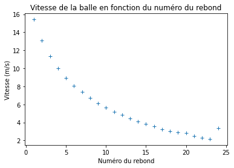

TP2 : Mesure du coefficient de rebond d’une balle
Contents
TP2 : Mesure du coefficient de rebond d’une balle#
Auteur : ARGUELLO Camilo#
import numpy as np
import matplotlib.pyplot as plt
import pandas as pd
# import data
data = pd.read_csv('./Acoustic Stopwatch_2023-03-07_15-24-18/All.csv', sep=',')
# show head
data.head()
| Event time (s) | Interval (s) | |
|---|---|---|
| 0 | 2.133771 | 0.785792 |
| 1 | 2.919563 | 0.668104 |
| 2 | 3.587667 | 0.578625 |
| 3 | 4.166292 | 0.509146 |
| 4 | 4.675438 | 0.454750 |
## Pour la première colonne, on calcule la différence de temps entre deux événements
# on calcule la différence de temps entre deux événements
data['diff'] = data['Event time (s)'].diff()
# on supprime la première ligne qui est NaN
data = data.dropna()
# on affiche les 5 premières lignes
data.head()
| Event time (s) | Interval (s) | diff | |
|---|---|---|---|
| 1 | 2.919563 | 0.668104 | 0.785792 |
| 2 | 3.587667 | 0.578625 | 0.668104 |
| 3 | 4.166292 | 0.509146 | 0.578625 |
| 4 | 4.675438 | 0.454750 | 0.509146 |
| 5 | 5.130187 | 0.411521 | 0.454750 |
# on verifie que la diff est égale à la colonne Interval (s)
# Il faut comparer les lignes de cette façon:
# ligne 2: data['diff'] avec ligne 1: data['Interval (s)']
# ligne 3: data['diff'] avec ligne 2: data['Interval (s)']
# ligne 4: data['diff'] avec ligne 3: data['Interval (s)']
# etc.
def interval_diff_compare(data):
for i in range(1, len(data)):
if round(data['diff'][i+1], 2) != round(data['Interval (s)'][i], 2):
return False
return True
# on verifie que la diff est égale à la colonne Interval (s)
print("La difference de temps est égale à l'intervalle: ", interval_diff_compare(data))
La difference de temps est égale à l'intervalle: True
## Calcul de la vitesse entre chaque rebond grâce à la formule T_i = 2 * v_i / g
data['vitesse'] = 2 * data['diff'] * 9.81
# on affiche les 5 premières lignes
data.head()
| Event time (s) | Interval (s) | diff | vitesse | |
|---|---|---|---|---|
| 1 | 2.919563 | 0.668104 | 0.785792 | 15.417233 |
| 2 | 3.587667 | 0.578625 | 0.668104 | 13.108204 |
| 3 | 4.166292 | 0.509146 | 0.578625 | 11.352623 |
| 4 | 4.675438 | 0.454750 | 0.509146 | 9.989441 |
| 5 | 5.130187 | 0.411521 | 0.454750 | 8.922195 |
# On calcule le numéro du rebond
data['rebond'] = np.arange(1, len(data)+1)
# On trace la vitesse de la balle en fonction du numéro du rebond
plt.plot(data['rebond'], data['vitesse'], '+')
plt.title('Vitesse de la balle en fonction du numéro du rebond')
plt.xlabel('Numéro du rebond')
plt.ylabel('Vitesse (m/s)')
plt.show()

## Exemple
x = [1, 2, 3, 4]
y = [2, 4, 5, 6]
yerr = [1,1.2,1.5,1.7]
plt.errorbar(x, y, yerr=yerr, fmt='o')
<ErrorbarContainer object of 3 artists>